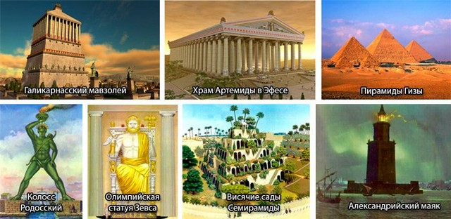

Першість складання списку 7 семи чудес світу Стародавнього світу приписується Антипатру сидонською, який їх на століття оспівав у своєму вірші:
Бачив я стіни твої, Вавилон, на яких просторо
І колісницям; бачив Зевса в Олімпії я,
Чудо висячих садів Вавилона, колос Геліоса
І піраміди - справи багатьох і тяжких праць;
Знаю Мавсола гробницю величезну. Але лише побачив
Я Артеміди чертог, стріху вознесший до хмар,
Все інше померкло перед ним; поза межами Олімпу
Сонце не бачить ніде рівної йому краси.
Бачив я стіни твої, Вавилон, на яких просторо
Деякі сюди відносять всі піраміди Єгипту, деякі великі піраміди Гізи, але здебільшого як диво сприймається тільки найбільша з них - піраміда Хеопса. Піраміда ж вважається і найстарішим дивом в списку - її будівництво оцінюють приблизно 2000 роком до нашої ери. Незважаючи на свою старість, це єдина споруда з 7 старих чудес світу, що дійшло до наших часів.
Створені за наказом царя пустельного Вавилона Навуходоносора II для своєї дружини ці сади мали втішати і нагадувати їй про далеку батьківщину. Ім'я Семіраміди, ассірійської цариці, з'явилося тут помилково, але, тим не менш, щільно закріпилося в історії.
Статуя створювалася для храму в великому релігійному центрі Стародавньої Греції - Олімпії. Гігантський Зевс скульптора Фідія вразив місцевих жителів настільки, що вони вирішили, ніби сам Зевс особисто позував майстру.
У стародавньому великому портовому місті Ефесі особливо шанували богиню родючості Артеміду. На честь неї тут створили величезний і величний храм, який потрапив в список 7 стародавніх чудес світу.
Багатий цар Мавсол побажав спорудити мавзолей-храм в Галікарнасі, непорівнянний ні з чим по красі. Над спорудою працювали кращі майстри того часу. Роботи закінчилися лише після смерті Мавсола, але це не завадило йому назавжди увійти в історію.
На честь великої перемоги жителі Родосу вирішили побудувати величезну статую бога Геліоса. Задум вдалося здійснити, але простояло це диво недовго, і незабаром було зруйновано землетрусом.
Для навігації кораблів поблизу великого порту Олександрії було вирішено спорудити найбільший на той час маяк. Будівля відразу ж затьмарило стіни Вавилона і зайняло місце в списку семи чудес світу давнини.
